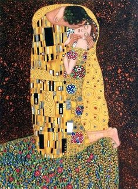
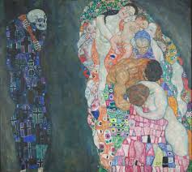
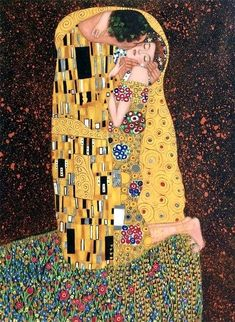
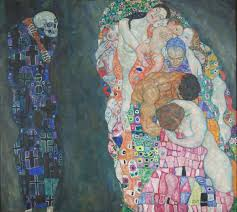

Gustav Klimt
Gustav Klimt (Baumgarten, 14 luglio 1862 – Vienna, 6 febbraio 1918) è stato un pittore austriaco, uno dei più significativi artisti della secessione viennese.
 Gustav Klimt (Baumgarten, 14 luglio 1862 – Vienna, 6 febbraio 1918) è stato un pittore austriaco, uno dei più significativi artisti della secessione viennese.
 